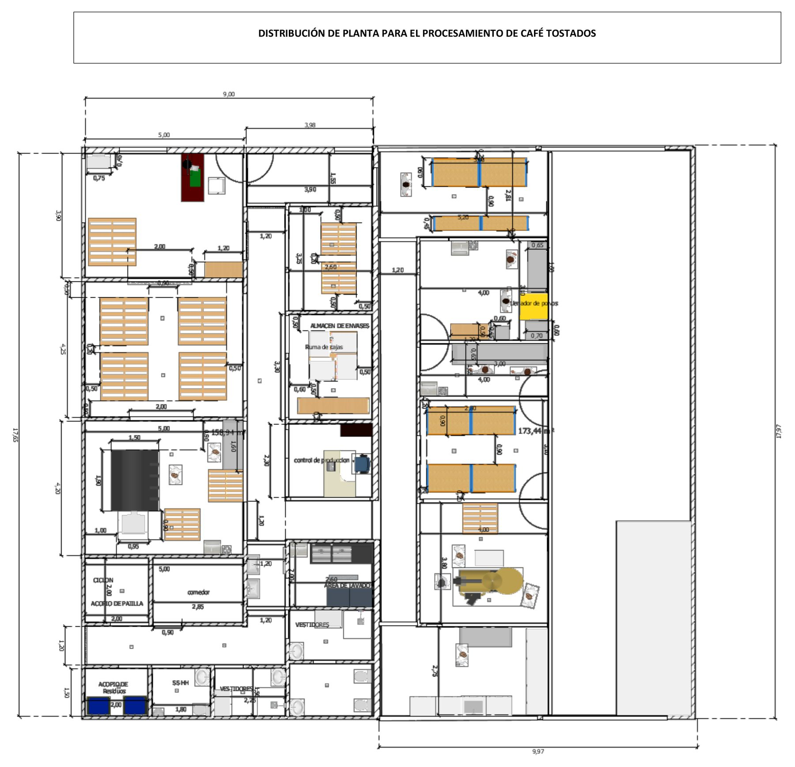

Inicio / Guías / Layout y distribución de planta
Guía técnicaLayout y distribución de planta de alimentos: ¿tu propuesta entra?
Antes de comprar equipos o levantar un muro, se miden el local y los puntos fijos, se prueba la distribución sobre esas medidas y se entrega el plano con cotas. Así sabes qué entra, qué no y qué ajustar.

El layout es el plano de cómo trabaja tu planta
El layout de planta, o distribución de planta, es la disposición de los ambientes, los equipos y las circulaciones sobre el plano: dónde entra la materia prima, dónde se procesa, dónde se envasa, por dónde sale el producto y dónde van el personal y los residuos.
En una planta de alimentos el layout también es una decisión de inocuidad: de él depende que los flujos avancen de lo sucio a lo limpio y no se crucen. Por eso conviene definirlo y probarlo sobre las medidas reales del local, antes de construir o de comprar equipos.
De las medidas al plano en cuatro pasos
Sirve tanto para una planta nueva como para ampliar o adecuar un local que ya existe.
Levantamiento de medidas
Visitamos el local y medimos ambientes, alturas, muros, columnas, puertas y ventanas. Ubicamos desagües, puntos de agua, tableros y tomas eléctricas, ventilación y accesos, con registro fotográfico.
Prueba de tu propuesta
Llevamos tu distribución, o la que armemos contigo, a las medidas reales. Marcamos equipos y áreas para ver qué entra, qué no y dónde falta espacio.
Revisión de flujos
Revisamos que no se crucen el producto crudo y el cocido, ni lo sucio y lo limpio, y que haya espacio para vestuarios, servicios higiénicos, almacenes y residuos.
Plano con cotas e informe
Pasamos todo a plano de planta con medidas y entregamos un informe breve de viabilidad: qué funciona, qué se ajusta y qué recomendamos.
Entregables del servicio
- Plano de planta con cotas: áreas, medidas de los ambientes y ubicación de los equipos.
- Puntos de servicios: agua, desagüe y electricidad ubicados sobre el plano.
- Informe de viabilidad: qué entra, qué no y qué ajustes recomendamos, con el registro fotográfico del local.
- Opcional: modelo 3D del local y simulación de la operación con FlexSim para ver cuellos de botella antes de invertir. Ver diseño 3D y simulación.
Puntos del DS 007-98-SA que se deciden en el plano
Son requisitos de infraestructura que conviene resolver al distribuir, no después en obra. El detalle artículo por artículo está en Qué revisa DIGESA en tu planta hoy.
Distribución y flujo
Ambientes ordenados para evitar la contaminación cruzada, con avance en etapas separadas desde el área sucia hacia la limpia.
Pisos y desagües
Pisos con declive hacia canaletas o sumideros: la ubicación de los desagües condiciona dónde van los equipos.
Vestuarios y servicios higiénicos
Espacio para cambiarse y servicios higiénicos según el número de trabajadores, fuera de la proximidad de la producción.
Equipos auxiliares
Los equipos complementarios que puedan contaminar el producto van en ambientes separados de las áreas de producción.
Qué necesitamos de ti
Tu propuesta
Plano, croquis o foto de la distribución que tienes pensada. Si aún no la tienes, la armamos contigo.
Lista de equipos
Con sus dimensiones: largo, ancho y alto de cada uno.
Datos de la operación
Qué produces, en qué cantidad, cuántos operarios tendrá la planta y si el local es propio o alquilado.
Acceso al local
Una persona que nos reciba y nos deje medir los ambientes y los puntos de agua, desagüe y energía.
Lo que más nos preguntan
¿Qué es el layout de una planta de alimentos?
Es la disposición de los ambientes, los equipos y las circulaciones de la planta sobre el plano. También se le llama distribución de planta. Un buen layout organiza el proceso y evita que los flujos se crucen.
¿Cómo sé si mi distribución entra en el local?
Se levantan las medidas reales del local (ambientes, muros, columnas, puertas, desagües y puntos de agua y electricidad) y se prueba la propuesta sobre esas medidas. Así se ve qué entra, qué no y qué hay que ajustar antes de comprar equipos o hacer obra.
¿Se puede adecuar un local que ya está construido?
Sí. El DS 007-98-SA (Art. 33) establece que el reacondicionamiento de locales ya construidos se sujeta a los mismos requisitos de estructura y acabados. Por eso conviene validar la distribución sobre las medidas reales antes de intervenir.
¿Qué necesito enviar para empezar?
Tu propuesta de distribución (plano, croquis o foto), la lista de equipos con sus dimensiones, qué vas a producir y en qué cantidad, cuántos operarios tendrá la planta y, si existen, los planos del local.
¿Entregan el plano con medidas?
Sí. El entregable es un plano de planta con cotas, áreas y ubicación de equipos y de los puntos de agua, desagüe y electricidad. Si lo necesitas, se complementa con un modelo 3D y una simulación de la operación.
¿Este plano reemplaza el trámite ante la autoridad sanitaria?
No. El plano es la base para que la planta cumpla los requisitos de infraestructura. Lo que se obtiene ante DIGESA, según el tipo de establecimiento y de producto, es la Validación Técnica Oficial del Plan HACCP o el Certificado PGH.
Fuente normativa: DS 007-98-SA, Reglamento sobre Vigilancia y Control Sanitario de Alimentos y Bebidas (Título IV). Las normas han tenido modificaciones posteriores: verifica siempre el texto vigente y el TUPA de la autoridad que corresponda.
¿Quieres saber si tu distribución funciona?
Cuéntanos qué piensas construir o ampliar. El diagnóstico inicial no tiene costo.
Agenda tu diagnóstico gratuito →